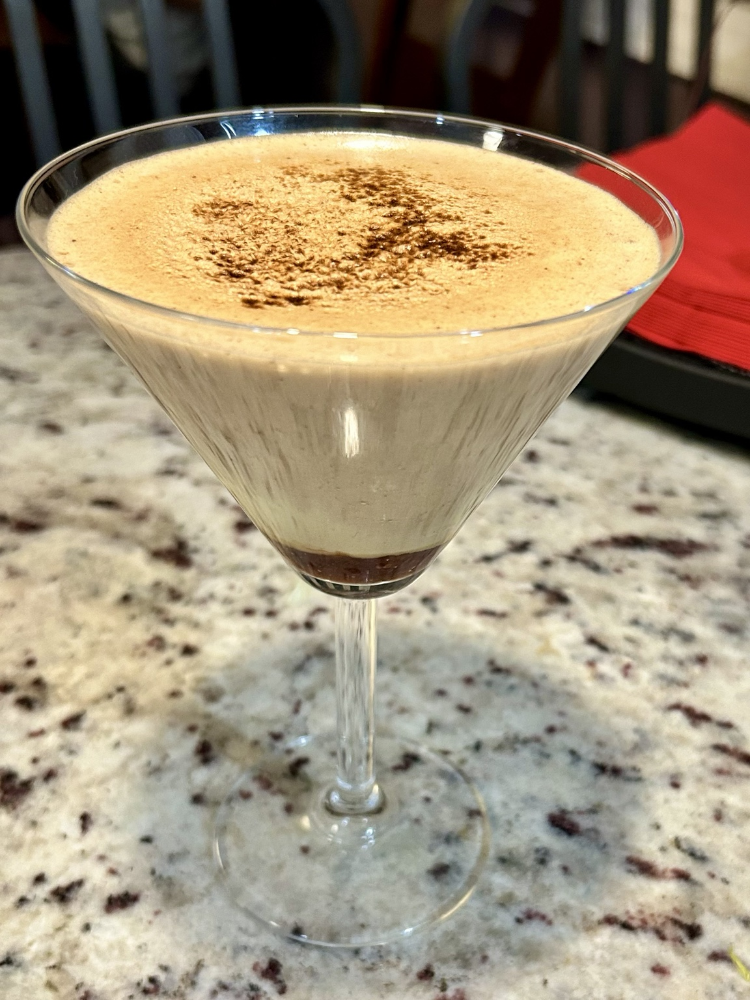
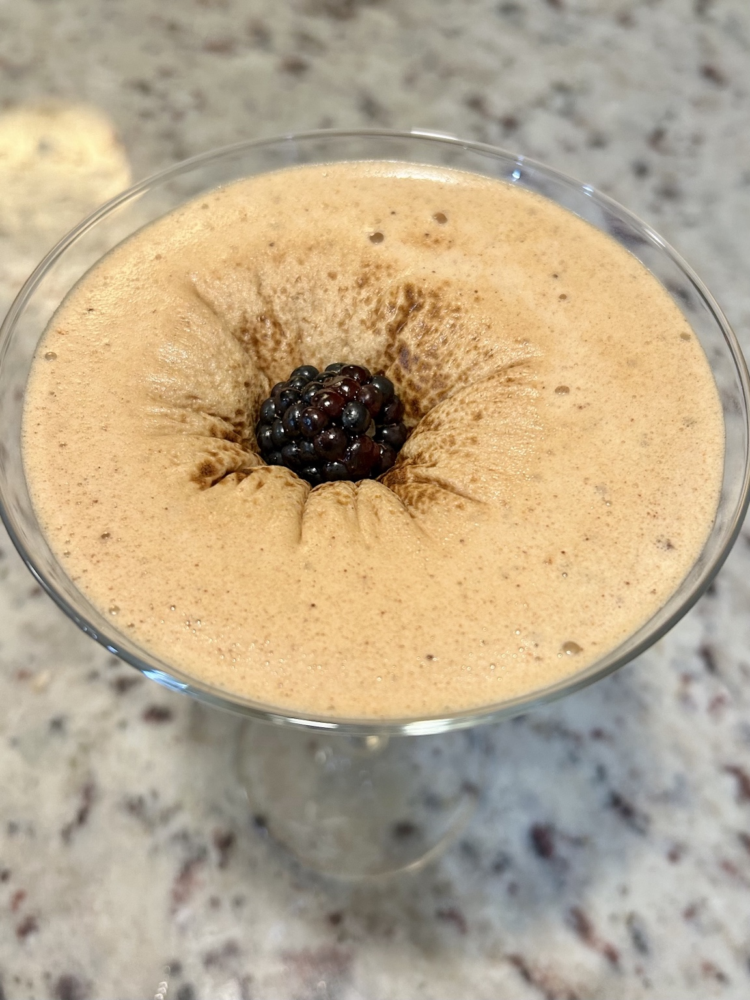
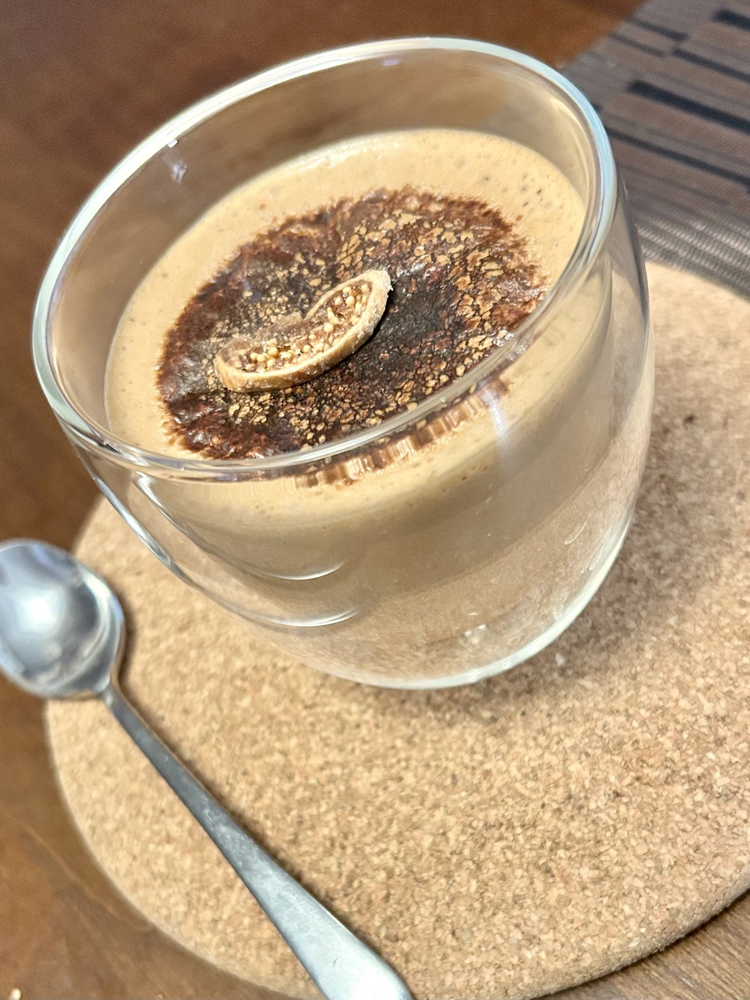

Dessert
Kogel Mogel
A Polish egg-yolk dessert, whipped until pale, thick, and almost mousse-like.



Ingredients
Base
- 1 egg
- Honey, to taste
- Cocoa powder, to taste
To finish
- A little fruit for the sinking Michelin-star effect.
Method
- Whisk the egg with honey until pale, airy, and noticeably increased in volume.
- Whisk in cocoa powder until smooth and evenly chocolatey.
- Spoon into an elegant serving glass (e.g. a martini glass).
- Burn the top with a kitchen torch until lightly caramelised.
- Serve straight away.
Notes
The texture should stay light and aerated under the thin caramelised top. The video presents the sinking effect, showcasing the light whisked texture and the torched top layer.
← Back to recipes